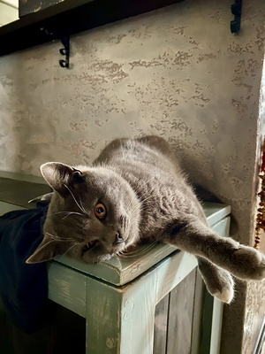

- пушистый
- ленивый
- жмякотельный
Британская короткошёрстная кошка
— крупная порода, имеющая массивное, коренастое телосложение. У представителей этой породы широкая грудная клетка и толстый хвост. Морда, уши, глаза и голова имеют округлую форму. У этих кошек короткий широкий нос и массивная нижняя челюсть. Шерсть — короткая и густая, без пушистости, бывает более ста окрасов и множество комбинаций пятен.